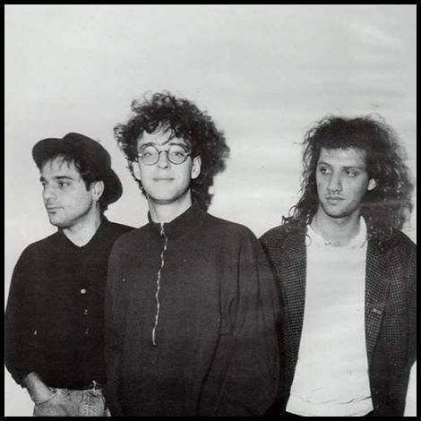
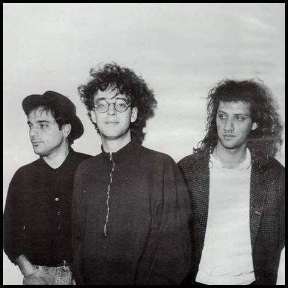

Nosotros
La Historia del Rock en Español
El rock en español nació como una expresión cultural que unió a jóvenes de toda América Latina y España, dando voz a sus inquietudes y sueños. Desde las bandas pioneras de los años 60 y 70 hasta las leyendas contemporáneas, este género ha sido el motor de una revolución musical y social.
Nuestro Propósito
En esta página celebramos la riqueza y diversidad del rock en español, promoviendo su historia, artistas y legado. Queremos crear una comunidad apasionada donde la música conecte corazones y mantenga viva la llama del rock auténtico.
Frases que inspiran
"El rock no es solo música, es una forma de vida."
— Gustavo Cerati
"El rock en español es la voz de la rebeldía y la esperanza de millones."
— Alejandra Guzmán
¿Por qué amamos el Rock en Español?
- Porque une generaciones y culturas.
- Porque sus letras hablan de nuestra realidad y sueños.
- Porque su energía y pasión son únicas.
- Porque es parte fundamental de nuestra identidad musical.
Artistas Emblemáticos
 
